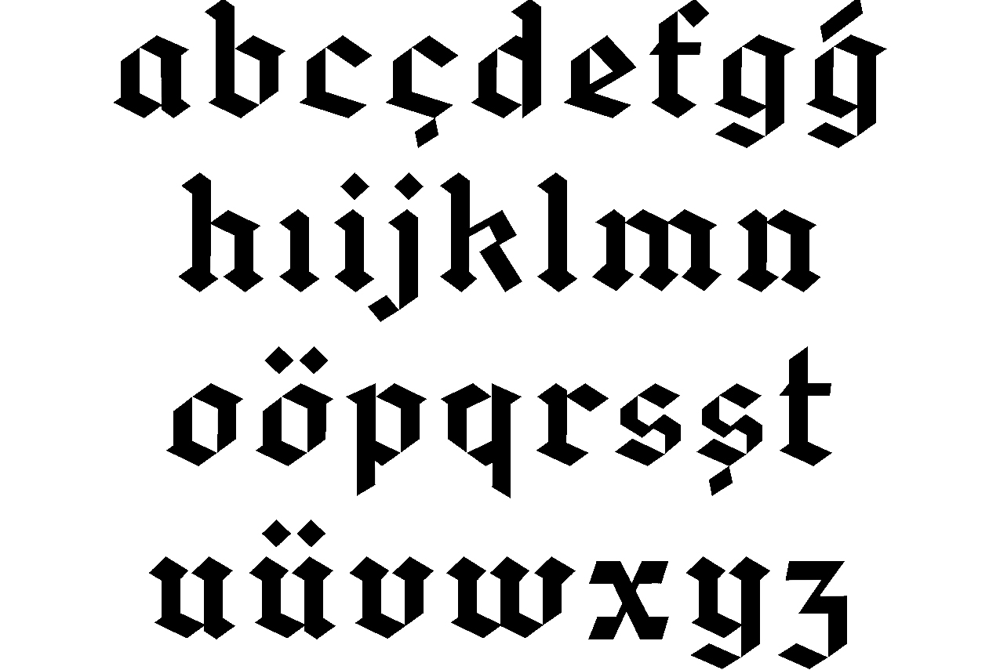
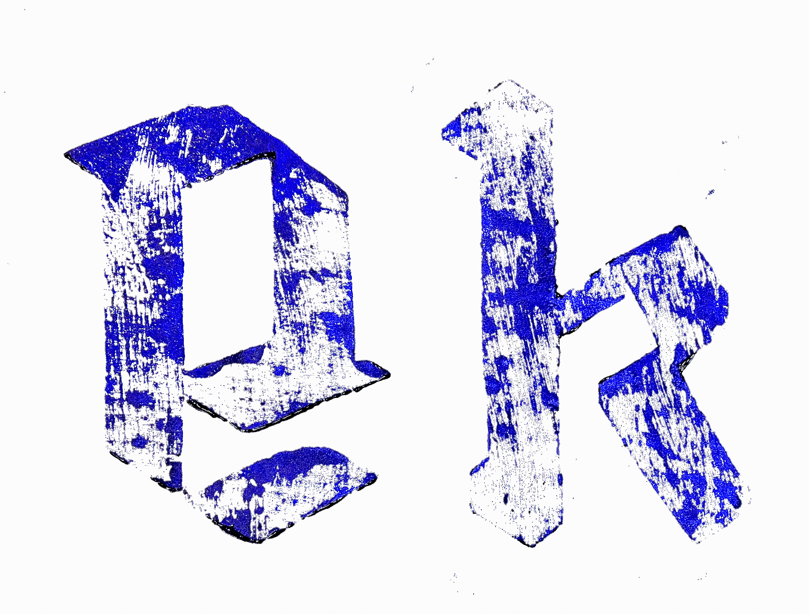
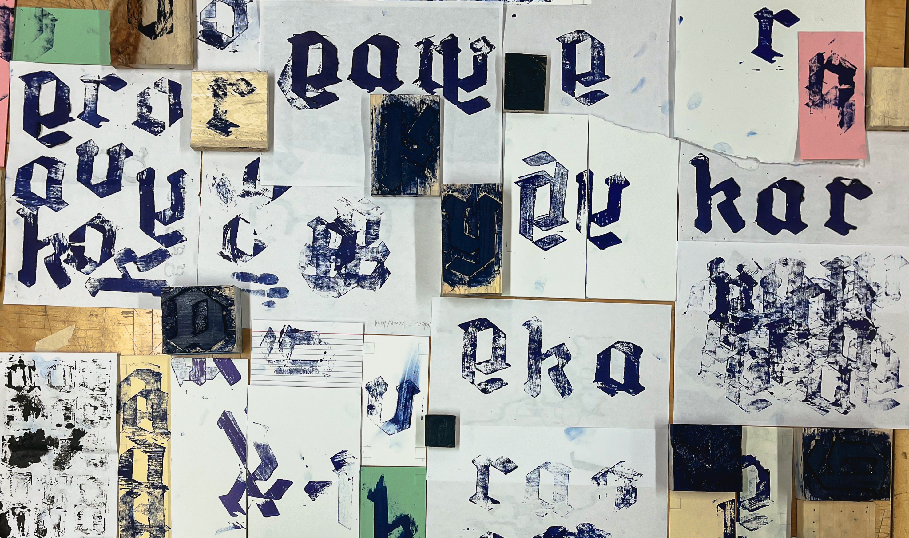

—yigit toprak
Graphic Designer
i. Projects
- Images of Body and Story
- 1984 (Obliteration)
- Emperor Display
- Wood Type
- Dialogue With The Machine
- Emperor (WEB)
- Escape Route
- Factory Reset
- All About Process
ii. Archives
iii. Info & Contact

Process
I started my process by designing a black—letter typeface. I had prior experience on how to design a typeface ,but designing a black—letter typeface was also a first for me. For that, I have learned the basics of black—letter: the consistent stroke contrast and strokes, straight lines with sharp edges, bold and big counters, flat nib pen properties and many more. I have used the software glyphs to design the lower case characters of the typeface.

THE PROCESS IS THE FINAL PIECE
My final piece is the box and the printed material. It is an interactive piece. The audience can use the printing blocks, the ink and the printed material to create their own layout Like shown in the very last image. As you go through the box, it is possible to see the process. In the end, the process is visible on the work itself.




